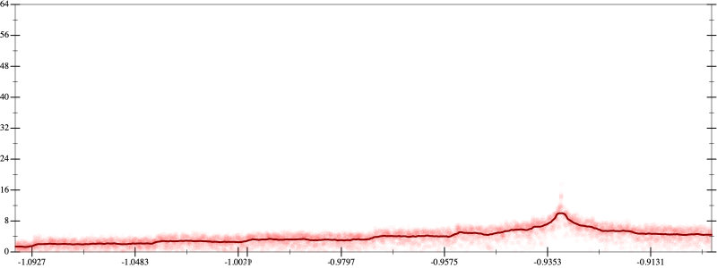
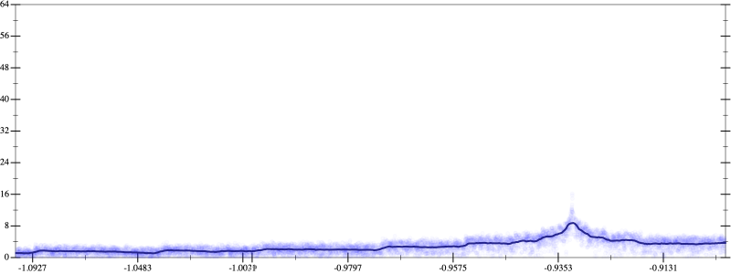
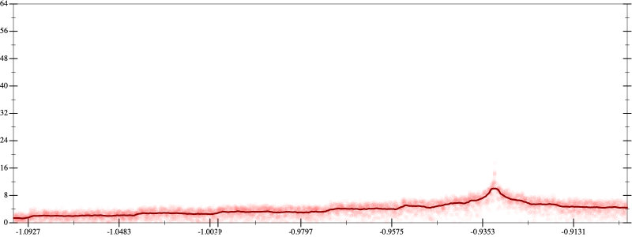
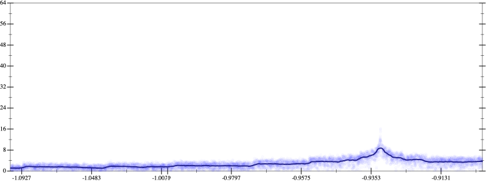

Initial program 3.9
\[\left(\left(-0.3125 + 6.5625 \cdot \left(x \cdot x\right)\right) + -19.6875 \cdot \left(\left(\left(x \cdot x\right) \cdot x\right) \cdot x\right)\right) + 14.4375 \cdot \left(\left(\left(\left(\left(x \cdot x\right) \cdot x\right) \cdot x\right) \cdot x\right) \cdot x\right)\]
Applied simplify3.1
\[\leadsto \color{blue}{\left(\left(x \cdot 6.5625\right) \cdot x + -0.3125\right) + \left(\left(x \cdot x\right) \cdot \left(x \cdot x\right)\right) \cdot \left(-19.6875 + \left(x \cdot x\right) \cdot 14.4375\right)}\]
- Using strategy
rm Applied add-log-exp3.1
\[\leadsto \left(\left(x \cdot 6.5625\right) \cdot x + -0.3125\right) + \color{blue}{\log \left(e^{\left(\left(x \cdot x\right) \cdot \left(x \cdot x\right)\right) \cdot \left(-19.6875 + \left(x \cdot x\right) \cdot 14.4375\right)}\right)}\]
Applied add-log-exp3.1
\[\leadsto \color{blue}{\log \left(e^{\left(x \cdot 6.5625\right) \cdot x + -0.3125}\right)} + \log \left(e^{\left(\left(x \cdot x\right) \cdot \left(x \cdot x\right)\right) \cdot \left(-19.6875 + \left(x \cdot x\right) \cdot 14.4375\right)}\right)\]
Applied sum-log3.1
\[\leadsto \color{blue}{\log \left(e^{\left(x \cdot 6.5625\right) \cdot x + -0.3125} \cdot e^{\left(\left(x \cdot x\right) \cdot \left(x \cdot x\right)\right) \cdot \left(-19.6875 + \left(x \cdot x\right) \cdot 14.4375\right)}\right)}\]
- Using strategy
rm Applied add-log-exp3.2
\[\leadsto \log \left(e^{\left(x \cdot 6.5625\right) \cdot x + -0.3125} \cdot e^{\color{blue}{\log \left(e^{\left(x \cdot x\right) \cdot \left(x \cdot x\right)}\right)} \cdot \left(-19.6875 + \left(x \cdot x\right) \cdot 14.4375\right)}\right)\]
Applied exp-to-pow3.1
\[\leadsto \log \left(e^{\left(x \cdot 6.5625\right) \cdot x + -0.3125} \cdot \color{blue}{{\left(e^{\left(x \cdot x\right) \cdot \left(x \cdot x\right)}\right)}^{\left(-19.6875 + \left(x \cdot x\right) \cdot 14.4375\right)}}\right)\]
- Using strategy
rm Applied add-cube-cbrt3.1
\[\leadsto \color{blue}{\left(\sqrt[3]{\log \left(e^{\left(x \cdot 6.5625\right) \cdot x + -0.3125} \cdot {\left(e^{\left(x \cdot x\right) \cdot \left(x \cdot x\right)}\right)}^{\left(-19.6875 + \left(x \cdot x\right) \cdot 14.4375\right)}\right)} \cdot \sqrt[3]{\log \left(e^{\left(x \cdot 6.5625\right) \cdot x + -0.3125} \cdot {\left(e^{\left(x \cdot x\right) \cdot \left(x \cdot x\right)}\right)}^{\left(-19.6875 + \left(x \cdot x\right) \cdot 14.4375\right)}\right)}\right) \cdot \sqrt[3]{\log \left(e^{\left(x \cdot 6.5625\right) \cdot x + -0.3125} \cdot {\left(e^{\left(x \cdot x\right) \cdot \left(x \cdot x\right)}\right)}^{\left(-19.6875 + \left(x \cdot x\right) \cdot 14.4375\right)}\right)}}\]
Applied simplify3.0
\[\leadsto \color{blue}{\left(\sqrt[3]{\left(\left(x \cdot x\right) \cdot \left(x \cdot x\right)\right) \cdot \left(\left(x \cdot x\right) \cdot 14.4375 + -19.6875\right) + \left(-0.3125 + \left(x \cdot x\right) \cdot 6.5625\right)} \cdot \sqrt[3]{\left(\left(x \cdot x\right) \cdot \left(x \cdot x\right)\right) \cdot \left(\left(x \cdot x\right) \cdot 14.4375 + -19.6875\right) + \left(-0.3125 + \left(x \cdot x\right) \cdot 6.5625\right)}\right)} \cdot \sqrt[3]{\log \left(e^{\left(x \cdot 6.5625\right) \cdot x + -0.3125} \cdot {\left(e^{\left(x \cdot x\right) \cdot \left(x \cdot x\right)}\right)}^{\left(-19.6875 + \left(x \cdot x\right) \cdot 14.4375\right)}\right)}\]
Applied simplify2.8
\[\leadsto \left(\sqrt[3]{\left(\left(x \cdot x\right) \cdot \left(x \cdot x\right)\right) \cdot \left(\left(x \cdot x\right) \cdot 14.4375 + -19.6875\right) + \left(-0.3125 + \left(x \cdot x\right) \cdot 6.5625\right)} \cdot \sqrt[3]{\left(\left(x \cdot x\right) \cdot \left(x \cdot x\right)\right) \cdot \left(\left(x \cdot x\right) \cdot 14.4375 + -19.6875\right) + \left(-0.3125 + \left(x \cdot x\right) \cdot 6.5625\right)}\right) \cdot \color{blue}{\sqrt[3]{\left(\left(x \cdot 6.5625\right) \cdot x + -0.3125\right) + \left(x \cdot \left(x \cdot 14.4375\right) + -19.6875\right) \cdot \left(\left(x \cdot x\right) \cdot \left(x \cdot x\right)\right)}}\]
- Using strategy
rm Applied flip-+2.8
\[\leadsto \left(\sqrt[3]{\left(\left(x \cdot x\right) \cdot \left(x \cdot x\right)\right) \cdot \left(\left(x \cdot x\right) \cdot 14.4375 + -19.6875\right) + \left(-0.3125 + \left(x \cdot x\right) \cdot 6.5625\right)} \cdot \sqrt[3]{\left(\left(x \cdot x\right) \cdot \left(x \cdot x\right)\right) \cdot \left(\left(x \cdot x\right) \cdot 14.4375 + -19.6875\right) + \left(-0.3125 + \left(x \cdot x\right) \cdot 6.5625\right)}\right) \cdot \sqrt[3]{\color{blue}{\frac{\left(\left(x \cdot 6.5625\right) \cdot x + -0.3125\right) \cdot \left(\left(x \cdot 6.5625\right) \cdot x + -0.3125\right) - \left(\left(x \cdot \left(x \cdot 14.4375\right) + -19.6875\right) \cdot \left(\left(x \cdot x\right) \cdot \left(x \cdot x\right)\right)\right) \cdot \left(\left(x \cdot \left(x \cdot 14.4375\right) + -19.6875\right) \cdot \left(\left(x \cdot x\right) \cdot \left(x \cdot x\right)\right)\right)}{\left(\left(x \cdot 6.5625\right) \cdot x + -0.3125\right) - \left(x \cdot \left(x \cdot 14.4375\right) + -19.6875\right) \cdot \left(\left(x \cdot x\right) \cdot \left(x \cdot x\right)\right)}}}\]
 
